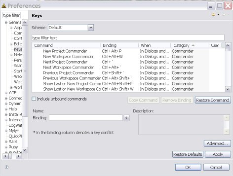

3rd Rail provides many ways to help you quickly move around between the files and navigate through the code of your project. The Open Associate feature helps you navigate through your application code. You can also take advantage of the Quick Keys.
The Explorers help you navigate between your project components.
The hyperlink feature in the Commanders let you quickly open files in the appropriate editor.
The Dependencies View is another powerful navigation feature.
The Open Associate feature provides context sensitive forward and backward navigation in controllers, actions, views and partials. Navigation follows application runtime dispatching rules.
Automatically toggle between associated actions and views from any editor and the Script Explorer or Navigation Views. Toggle from an action to the associated view or from the view to the associated action by right-clicking from within the public method and selecting Associated View. The associated file opens with focus on the associated code.
To use Open Associate:
The complete list of key bindings is available from
Window Preferences
Preferences General
General
To find the special 3rdRail Quick Keys, sort them by Category and scroll to the Commanders, Ruby, or Rails sections of the list.

 CodeGear brand
and product names are service marks, trademarks or registered trademarks of Borland Software
Corporation in the United States and other countries.
CodeGear brand
and product names are service marks, trademarks or registered trademarks of Borland Software
Corporation in the United States and other countries.